01 · 票根TICKET STUB
推荐落地


递出一张进入音乐现场的票。 工艺：虚线撕孔 + 半圆模切。
从一张票根，到舞台边的歌单。把华语青年音乐与文化的现场感，变成能拿在手里、放进口袋、留下记忆的物件。
本页照片均为 AI 概念图，文字及品牌标志由真实素材后期合成。生成原图已重采样至交付尺寸；名片 PDF 为 RGB 打样母稿，工艺需实物确认。
递出一张进入音乐现场的票。 工艺：虚线撕孔 + 半圆模切。
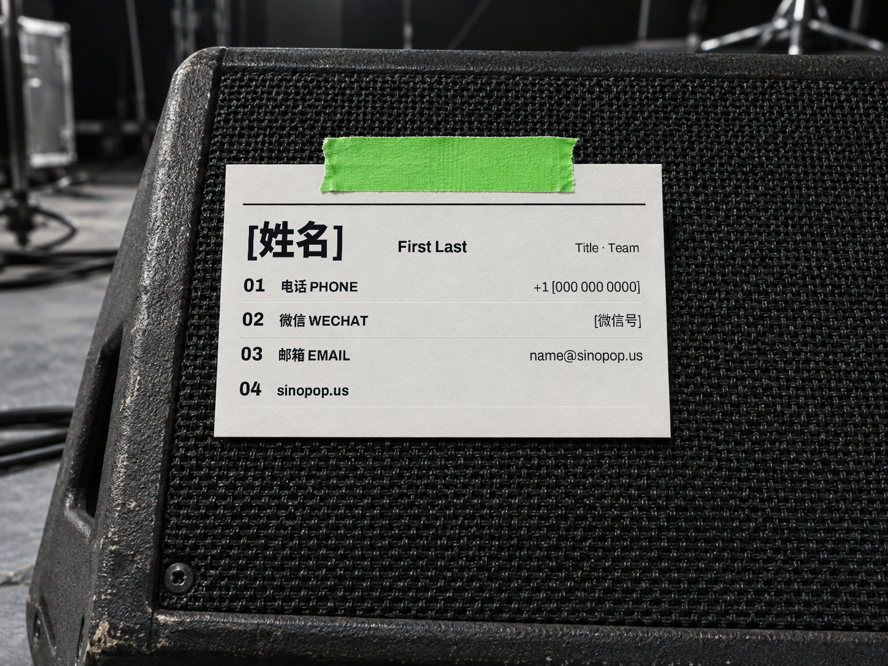
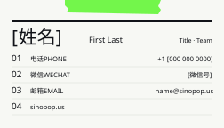
联系方式像四首曲目，清楚而直接。 工艺：非涂布纸双面印刷。
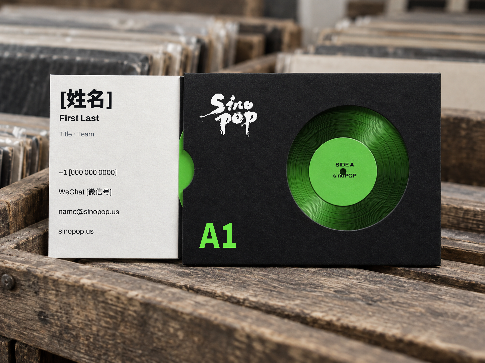
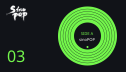
把新的关系装进一张值得收藏的唱片。 工艺：圆窗模切 + 可抽内卡。
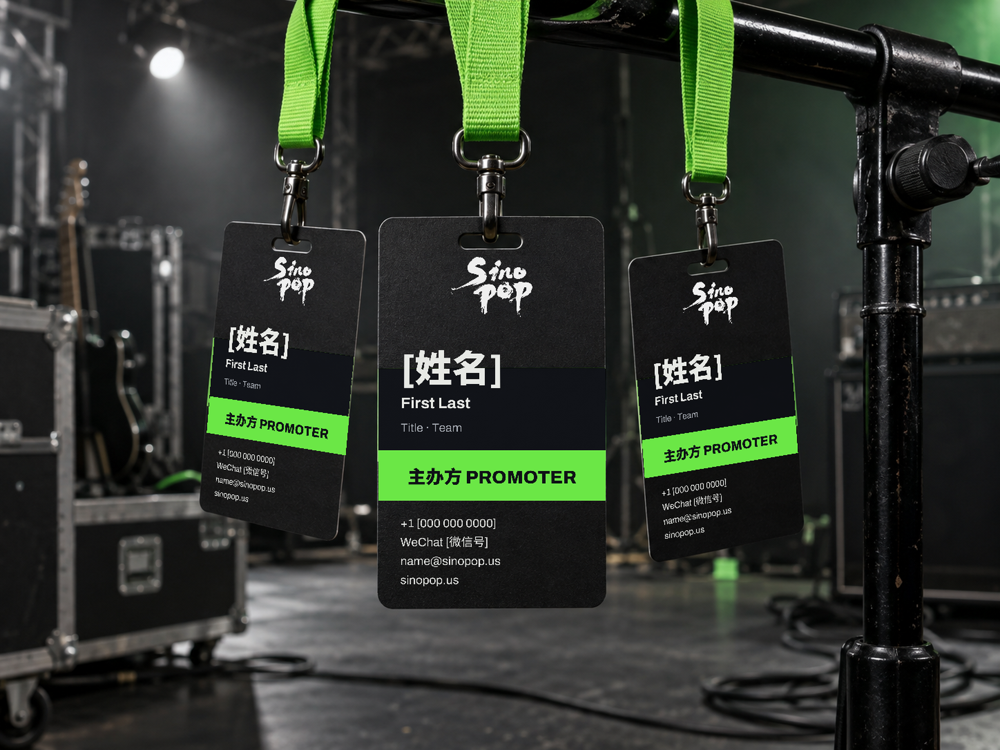
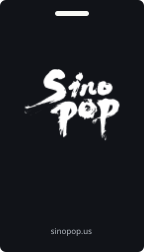
属于现场的人，拥有自己的通行证。 工艺：圆角模切 + 挂绳槽孔。
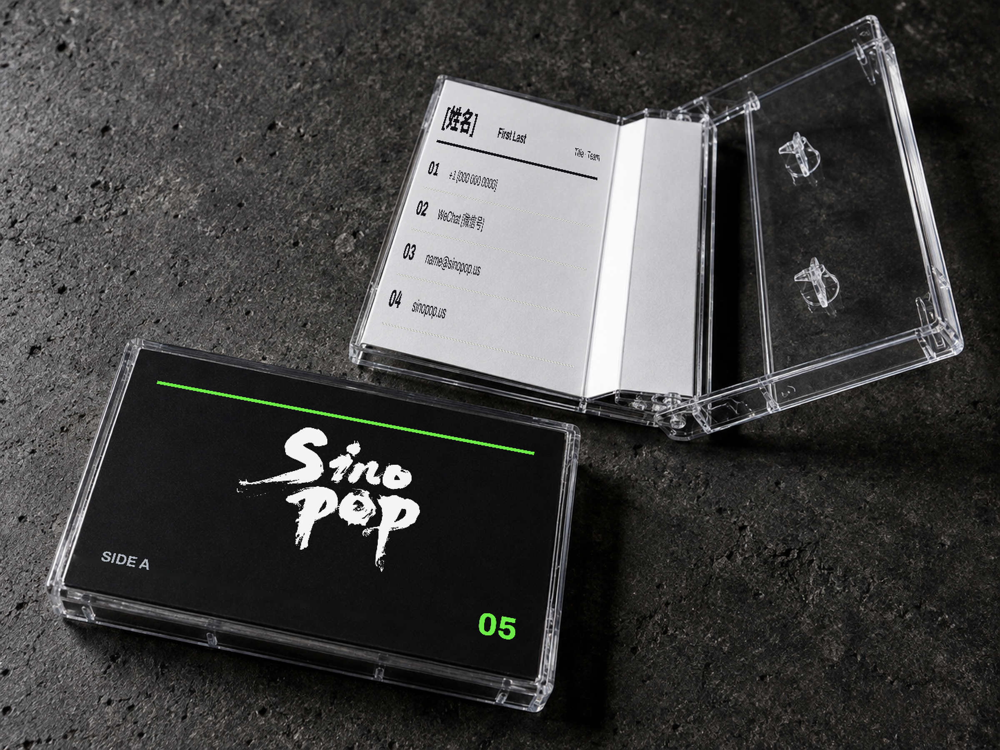
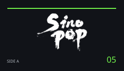
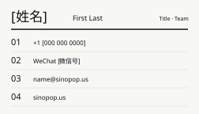
翻开封面，像读一张实体唱片的内页。 工艺：两道压痕 + 三面折页。
用厚度、边缘与触感留下记忆。 工艺：600 gsm 黑棉 + 刷边 + 盲压凹。
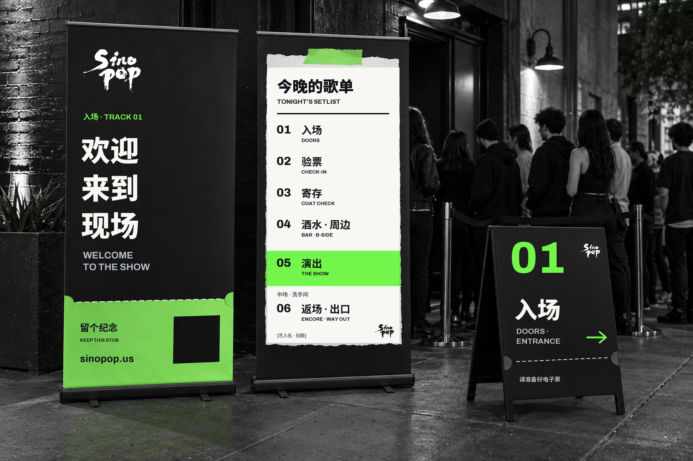
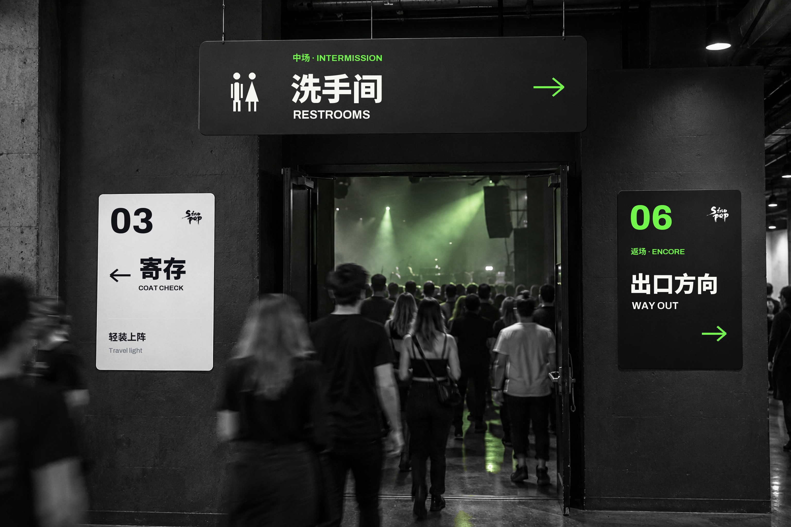
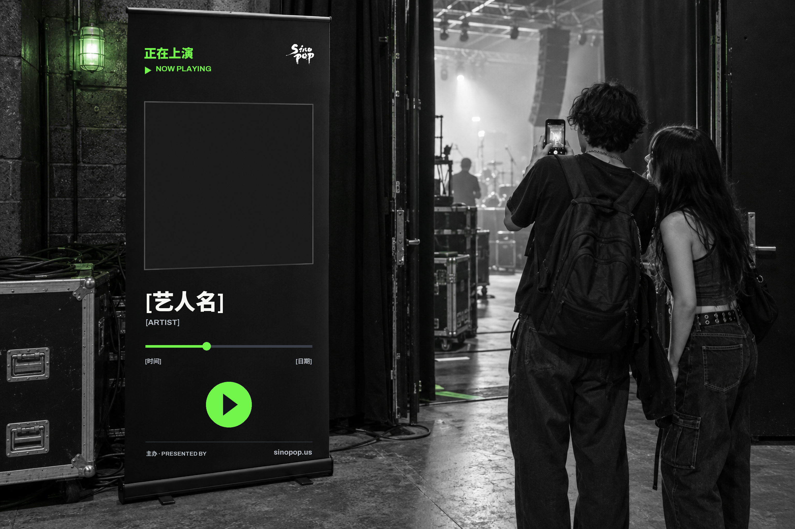
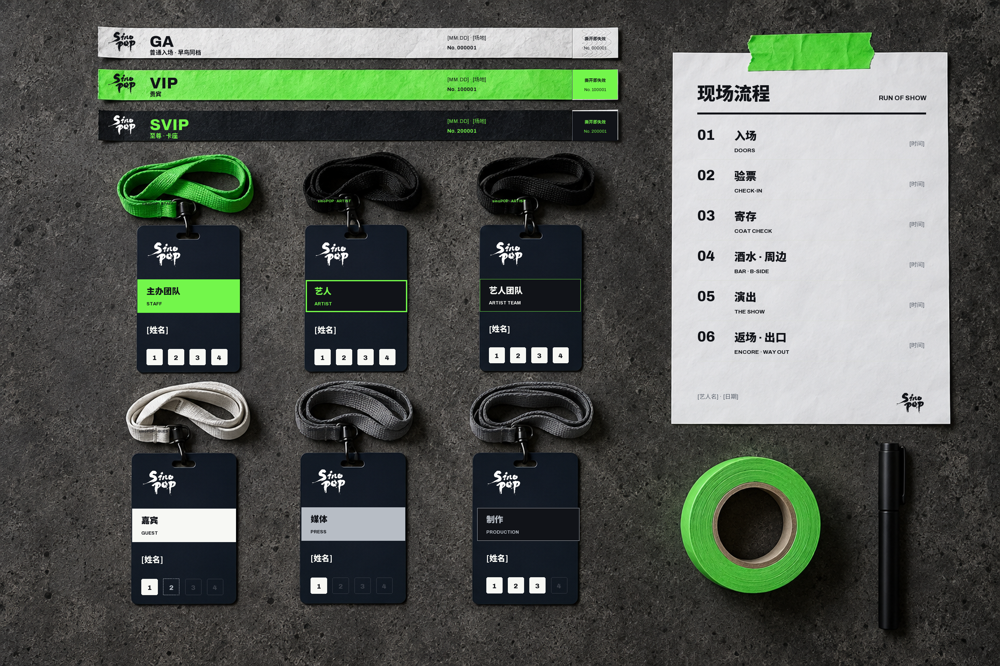
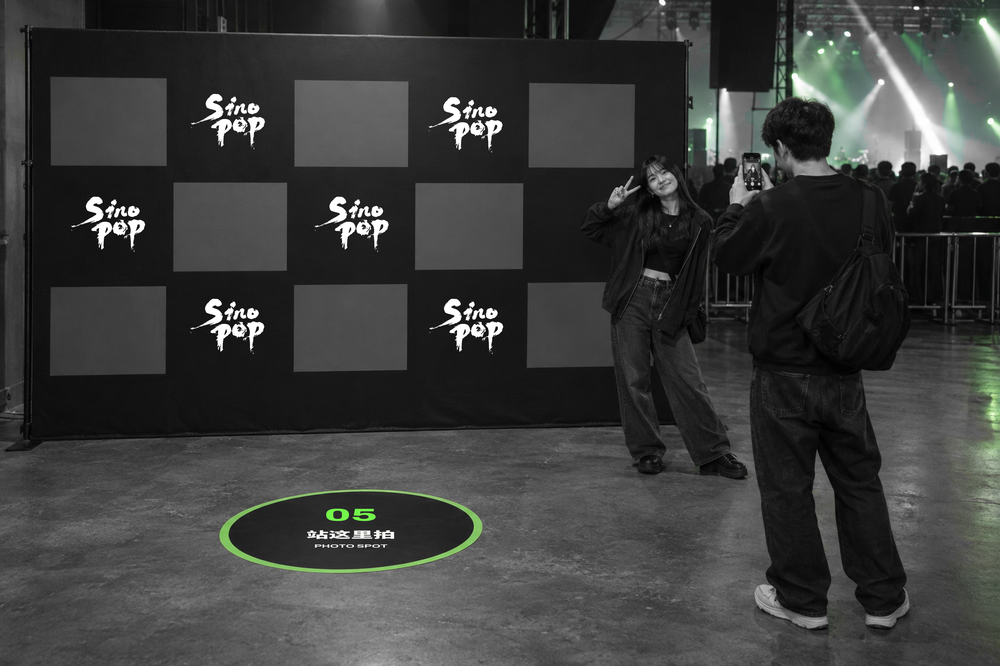
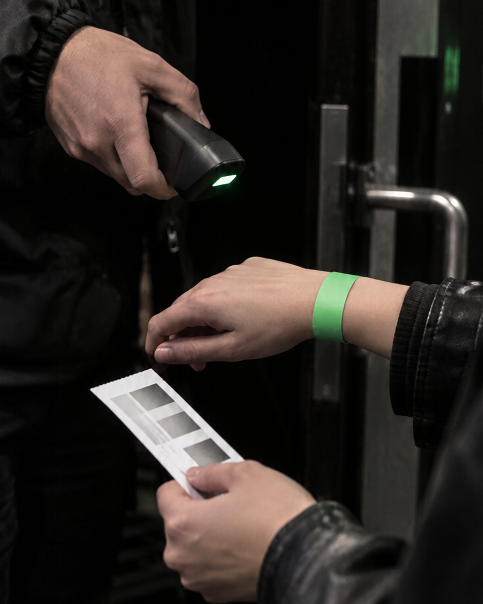
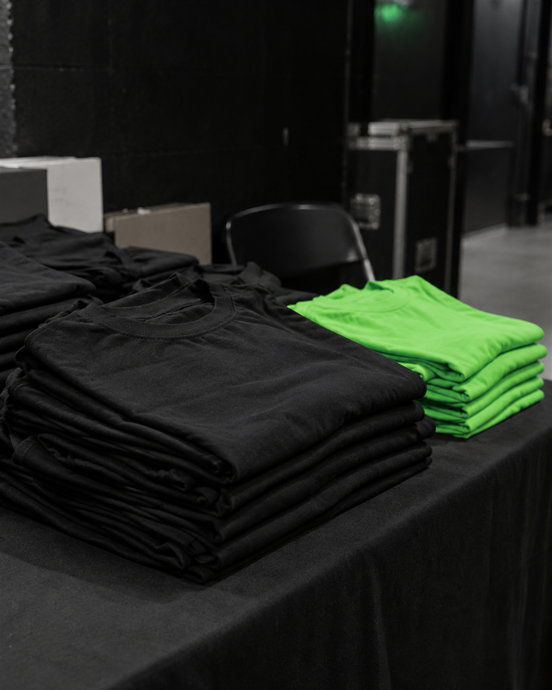
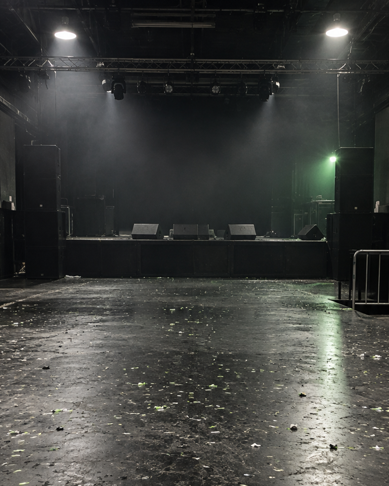